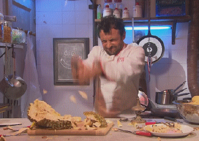

Bienvenue sur mon site de cuisine.
Ah, la cuisine, partant des petits plats à la gastronomie Française ou encore la bonne nouriture Américaine ou bien les fameuse frites. Sur mon site je vous partagerais des recettes de cuisine avec un tuto bien sur !
Quelque lien utile :